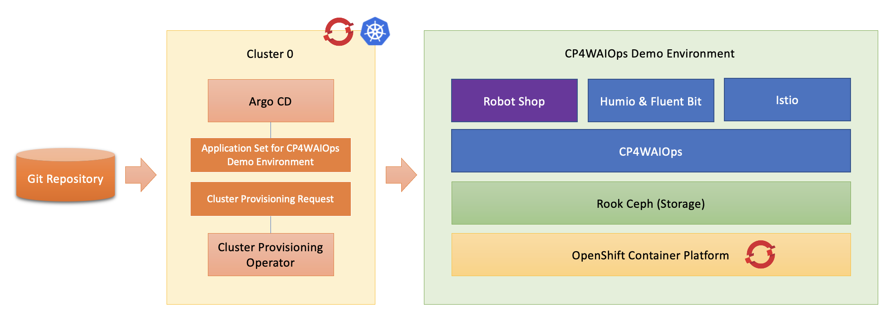
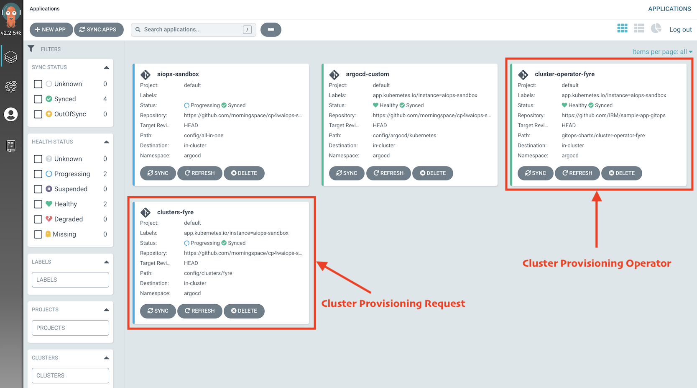
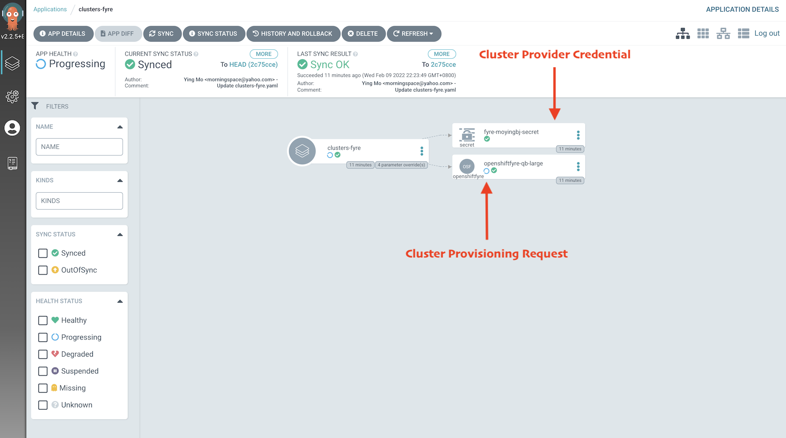
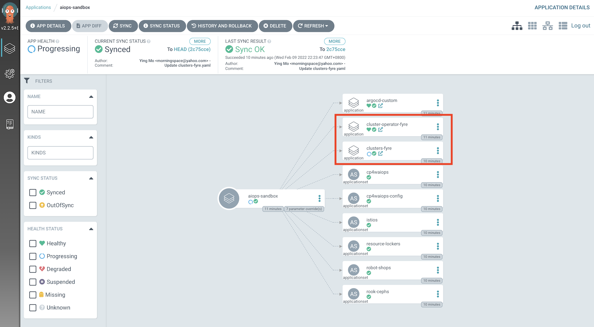
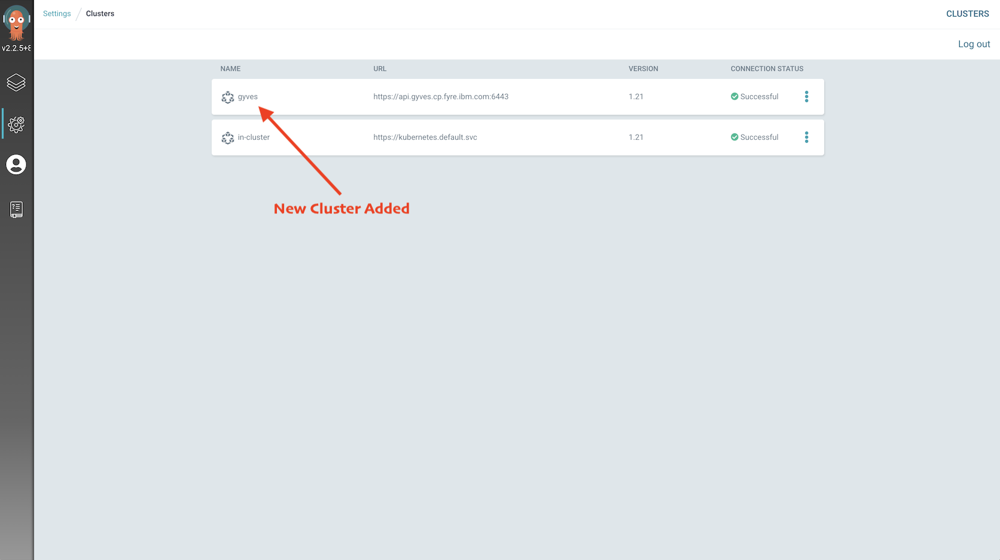
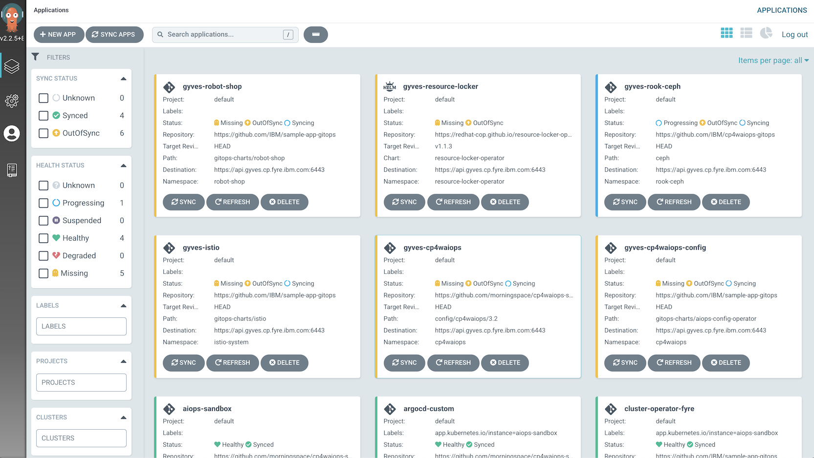
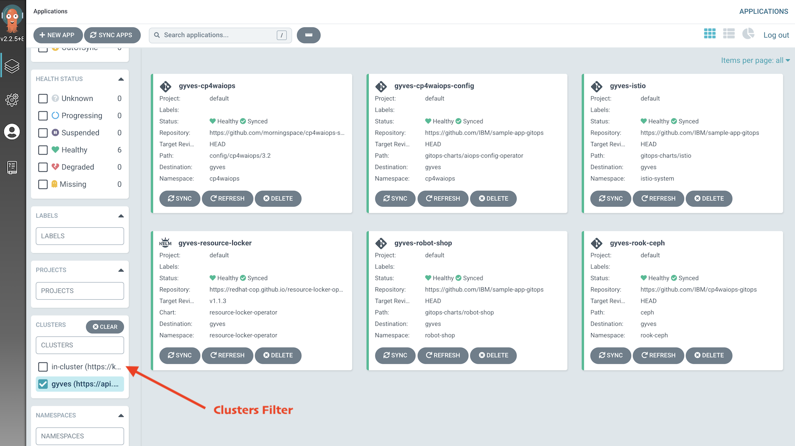

Table of Contents generated with DocToc
Deploy CP4WAIOps Demo Environment Including Cluster Provisioning¶
In this tutorial, you will learn the steps to provision an OpenShift cluster, then use this cluster to deploy CP4WAIOps demo environment using GitOps. With this approach, you will get a fully automated experience of launching a CP4WAIOps demo environment, started from cluster provisioning, till to the demo environment deployment, and configuration, all driven by GitOps automatically.

Install CP4WAIOps Demo Environment¶
After finish the install of Argo CD, you can deploy CP4WAIOps demo environment via Argo CD UI. To install CP4WAIOps demo environment, please refer to Install CP4WAIOps Demo Environment.
The only difference when you set the install parameters is that:
- For
argocd.allowLocalDeploy, make sure it isfalse. This is to avoid the CP4WAIOps demo environment from being deployed on the same cluster where Argo CD runs, since in this case, that cluster is used to run Argo CD dedicately. - You will be able to configure the OpenShift cluster provisioning using following install parameters.
| Parameter | Type | Default Value | Description |
|---|---|---|---|
| cluster.enabled | bool | false | Specify whether or not to provision a cluster before install CP4WAIOps. |
| cluster.provider.type | string | fyre | The supported provider to provision cluster, valid values include: fyre. |
| cluster.provider.quotaType | string | quick-burn | The supported quota type to provision cluster, valid values include: quick-burn, ocp-plus. |
| cluster.provider.credentials.productGroupId | string | REPLACE_IT | Fyre product group id required when calling Fyre API. |
| cluster.provider.credentials.token | string | REPLACE_IT | Fyre user token required when calling Fyre API. |
| cluster.provider.credentials.user | string | REPLACE_IT | Fyre user id required when calling Fyre API. |
| cluster.provider.site | string | svl | Fyre site required when calling Fyre API, ocp-plus only. |
| cluster.provider.ocpVersion | string | 4.8.27 | OCP Version required when calling Fyre API. |
| cluster.provider.workerFlavor | string | extra-large | The supported size to provision cluster, valid values include: extra-large, large. extra-large requests 6 worker nodes, large requests 3 worker nodes. |
NOTE:
- For
cluster.provider.type,fyreis currently the only supported provider. It is an IBM IaaS platform only for internal use.
These parameters are invisible when you create the Argo CD App from UI. You can add them when filling in the form in HELM > VALUES field as follows:
cluster:
enabled: true
provider:
type: fyre
quotaType: quick-burn
credentials:
user: <my_user_id>
token: <my_user_token>
productGroupId: <my_product_group_id>
After you create the Argo CD App, you will see something similar as follows from Argo CD UI:

Apart from the root level App, the App cluster-operator-fyre represents the operator that drives the cluster provisioning on Fyre. The App clusters-fyre maps the cluster provisioning request created and stored in git repository. Click the App clusters-fyre to check its details:

There is a custom resource in type of OpenShiftFyre that "documents" the desired status for the OpenShift cluster to be requested. Also, there is a secret that includes the Fyre credentials that you input earlier when creating the Argo CD App using install parameters. The operator will use this information to communicate with Fyre API. You may also notice that the OpenShiftFyre resource is in Processing status. This means the operator has issued the request to Fyre successfully and Fyre has started to provision the cluster for you.
If you go to the root level App, you will see that two new child level Apps are added:

Because the cluster is still being provisioned and not available to deploy the CP4WAIOps demo environment yet, there is no actual App instance spawned for the demo environment. Usually, it takes time to complete the cluster provisioning. Once it's completed, the new cluster will be added to Argo CD automatically by the operator. You can check it by going to Settings > Clusters from Argo CD UI:

When the new cluster is displayed in the list as above, Argo CD will then kick off the demo environment deployment on that cluster immediately without any manual intervention. You will see all child level Apps are now getting created from the Applications view as follows:

Specify the target cluster in the clusters filter box, then wait for all Apps turning into green.

Now you should be able to use your fresh new CP4WAIOps demo environment!